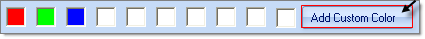
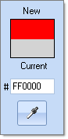
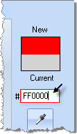

Working with the RadColorDialog
Properties
The significant properties unique to RadColorDialog are:
ActiveMode: Determines the currently selected tab. Valid enumeration values from Telerik.WinControls.ColorPickerActiveMode__are __Basic, System, Web, Professional.
AllowColorPickFromScreen: When true (the default) the "eye dropper" tool is displayed.
AllowColorSaving: Toggles the "Add a custom color" button visibility.
BackColor: The background color of the color selector as a whole. You can also set this color to be Transparent to have it blend in with your other UI elements.
ForeColor: The color for labels and text entry.
SelectedColor:__In the figure below the __SelectedColor is labeled as "New".
OldColor:__In the figure below the __OldColor is labeled as "Current".
ShowBasicColors, ShowSystemColors, ShowWebColors, ShowProfessionalColors: If true (the default) the corresponding Basic, System, Web and Professional tabs are displayed.
AllowEditHEXValue: If true (the default) enables hexadecimal entry of color values.
ShowHEXColorValue: If true (the default) displays the hexadecimal entry of color values.
CustomColors[]: This is a read-only array of Color objects. You can query the contents of the custom colors displayed along the bottom of the selector.
[C#] Enlist the current custom colors in RadColorDialog
private void radButton1_Click(object sender, EventArgs e)
{
StringBuilder sb = new StringBuilder();
foreach (Color color in radColorDialog1.CustomColors)
{
sb.Append(color.ToString());
sb.Append(System.Environment.NewLine);
}
MessageBox.Show(sb.ToString());
}
[VB.NET] Enlist the current custom colors in RadColorDialog
Private Sub RadButton1_Click_1(ByVal sender As System.Object, ByVal e As System.EventArgs) Handles RadButton1.Click
Dim sb As New StringBuilder()
For Each color As Color In RadColorDialog1.CustomColors
sb.Append(color.ToString())
sb.Append(System.Environment.NewLine)
Next
MessageBox.Show(sb.ToString())
End Sub
Localization/Internationalization Properties:__The text values of the __RadColorDialog can be customized for easy localization including properties AddNewColorButtonText, BasicTabHeading, SystemTabHeading, WebTabHeading, ProfessionalTabHeading, SelectedColorLabelHeading__and __OldColorLabelHeading.
Getting the selected colors
In order go get the SelectedColor or the SelectedHlsColor you can use the following code snippet:
[C#] Enlist the current custom colors in RadColorDialog
if (radColorDialog1.ShowDialog() == DialogResult.OK)
{
Color color = radColorDialog1.SelectedColor;
HslColor hslColor = radColorDialog1.SelectedHslColor;
}
[VB.NET] Enlist the current custom colors in RadColorDialog
If RadColorDialog1.ShowDialog() = DialogResult.OK Then
Dim color As Color = RadColorDialog1.SelectedColor
Dim hslColor As Telerik.WinControls.HslColor = RadColorDialog1.SelectedHslColor
End If